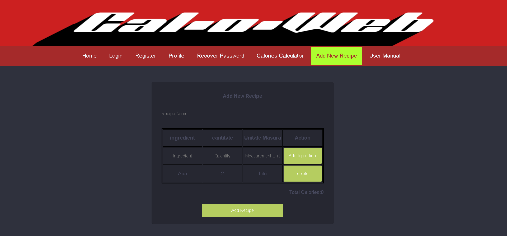

Pentru a adauga o noua reteta este necesar sa intrati aici.
In casuta Recipe Name va trebui sa treceti numele retetei(Ex:"clatite cu banane")
Pentru a adauga un ingredient aceste retete , este necesar sa puneti numele ingredientului, cantitatea si unitatea de masura in a 2-a linie din tabel,iar apoi apasati pe butonul "Add Ingredient".(ex:"Apa,2,Litri")
Noul ingredient va aparea in tabel, cu posibilitatea de a-l sterge din lista.
La final , pentru a da submit retetei, apasati pe butonul "Add Recipe" din josul paginii.